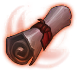

정수 14종
정수 부위 장비 전체입니다. 등급 오름차순으로 정렬했습니다.
요약 표
| 이름 | 등급 | 분류 | 직업 | 공격 | 체력 | 제작 확률 | 제작 시간 | 제작 골드 | |
|---|---|---|---|---|---|---|---|---|---|
 | 회복의 정수 | C | 정수 | 공용 | - | 200 | 50 | 1,440 | 50,000,000 |
 | 흡수의 정수 | C | 정수 | 공용 | - | 200 | 50 | 1,440 | 50,000,000 |
 | 오래된 곡괭이 | C | 정수 | 공용 | - | 400 | 50 | 1,440 | 50,000,000 |
 | 펌킨의 일기 1권 | C | 정수 | 착용불가 | - | 1 | 100 | 1,440 | 50,000,000 |
 | 헌터의 정수 | R | 정수 | 헌터 | - | 400 | 50 | 1,440 | 75,000,000 |
 | 워리어의 정수 | R | 정수 | 워리어 | - | 400 | 50 | 1,440 | 75,000,000 |
 | 어쌔신의 정수 | R | 정수 | 어쌔신 | - | 400 | 50 | 1,440 | 75,000,000 |
 | 메이지의 정수 | R | 정수 | 메이지 | - | 400 | 50 | 1,440 | 75,000,000 |
 | 팔라딘의 정수 | R | 정수 | 팔라딘 | - | 400 | 50 | 1,440 | 75,000,000 |
 | 펌킨의 일기 2권 | R | 정수 | 착용불가 | - | 1 | 100 | 1,440 | 75,000,000 |
 | 찬란한 곡괭이 | E | 정수 | 공용 | - | 5,000 | 50 | 1,440 | 150,000,000 |
 | 펌킨의 일기 3권 | E | 정수 | 착용불가 | - | 1 | 50 | 1,440 | 75,000,000 |
 | 펌킨의 일기 4권 | RD | 정수 | 착용불가 | - | 1 | 50 | 1,440 | 75,000,000 |
| 시련의 정수 | RD | 정수 | 공용 | - | 10,000 | 50 | 1,440 | 75,000,000 |
장비 상세
회복의 정수 C
특수 효과 20초마다 최대 체력의 25% 회복
아이템 스킬 영웅 회복 · 유형 cool · 쿨 20
제작 확률 50 · 시간 1,440 · 골드 50,000,000 · 강화 보호 재료 전설 망치 ×1 · 강화표 E_C
제작 재료(m_List) (빈 칸) ×25 · Material Cylinder001Mat ×10 · Material Material_1 ×10 · Material Blood_Tornado ×2
흡수의 정수 C
특수 효과 일반 공격시 최대 체력의 1% 회복
아이템 스킬 일반 흡수 · 유형 Passive · 쿨 0
제작 확률 50 · 시간 1,440 · 골드 50,000,000 · 강화 보호 재료 망치 ×1 · 강화표 E_C
제작 재료(m_List) (빈 칸) ×25 · Material Cylinder001Mat ×10 · Material Material_1 ×10 · Material MAT_LUCIA_HAIR_Red_02 ×2
오래된 곡괭이 C
특수 효과 30초마다 2초간 모든 공격 회피
아이템 스킬 · 유형 cool · 쿨 30
제작 확률 50 · 시간 1,440 · 골드 50,000,000 · 강화 보호 재료 망치 ×1 · 강화표 E_C
제작 재료(m_List) Material Gradient_Beam_007 ×1,000 · Material MI_CavePlatform_Ice ×200 · Material Cylinder001Mat ×100 · (빈 칸) ×30 · Material ground10 ×40
펌킨의 일기 1권 C
특수 효과 보유시 받는 경험치 10% 증가
제작 확률 100 · 시간 1,440 · 골드 50,000,000 · 강화 보호 재료 망치 ×1 · 강화표 E_C
제작 재료(m_List) Material MAT_BB_Trunks_03_11 ×50 · Material MAT_HAIR_Wavy_14 ×40 · Texture2D sactx-2-1024x1024-ASTC 8x8-##UI_2-11036c3c ×20 · Texture2D T_goblin_MT ×5
헌터의 정수 R
특수 효과 잃은 체력 비례 물리 방어력 마법 방어력 증가(최대150% 증가)
아이템 스킬 헌터 스킬 · 유형 Passive · 쿨 0
제작 확률 50 · 시간 1,440 · 골드 75,000,000 · 강화 보호 재료 망치 ×1 · 강화표 E_R
제작 재료(m_List) (빈 칸) ×50 · Material Cylinder001Mat ×20 · Material Material_1 ×20 · Material MAT_BG_BIKINI_SET_02 Color 09 ×5
워리어의 정수 R
특수 효과 잃은 체력 비례 받는 피해 감소 (최대 80% 감소)
아이템 스킬 수ㅇ · 유형 Passive · 쿨 0
제작 확률 50 · 시간 1,440 · 골드 75,000,000 · 강화 보호 재료 망치 ×1 · 강화표 E_R
제작 재료(m_List) (빈 칸) ×50 · Material Cylinder001Mat ×20 · Material Material_1 ×20 · (빈 칸) ×5
어쌔신의 정수 R
특수 효과 받는 피해 60% 감소
아이템 스킬 수ㅇ · 유형 Passive · 쿨 0
제작 확률 50 · 시간 1,440 · 골드 75,000,000 · 강화 보호 재료 망치 ×1 · 강화표 E_R
제작 재료(m_List) (빈 칸) ×50 · Material Cylinder001Mat ×20 · Material Material_1 ×20 · Material MAT_LUCIA_HAIR_Red_03 ×5
메이지의 정수 R
특수 효과 체력이 최대치의 70% 이상일 때, 받는 피해 70% 감소
아이템 스킬 수ㅇ · 유형 Passive · 쿨 0
제작 확률 50 · 시간 1,440 · 골드 75,000,000 · 강화 보호 재료 망치 ×1 · 강화표 E_R
제작 재료(m_List) (빈 칸) ×50 · Material Cylinder001Mat ×20 · Material Material_1 ×20 · Material MAT_VG_EYES_Cosmic_02 ×5
팔라딘의 정수 R
특수 효과 초당 최대 체력의 3% 회복
아이템 스킬 수ㅇ · 유형 Passive · 쿨 0
제작 확률 50 · 시간 1,440 · 골드 75,000,000 · 강화 보호 재료 망치 ×1 · 강화표 E_R
제작 재료(m_List) (빈 칸) ×50 · Material Cylinder001Mat ×20 · Material Material_1 ×20 · Material Smoke_AlphaSpiky_Alpha ×5
펌킨의 일기 2권 R
특수 효과 보유시 받는 골드 10% 증가
제작 확률 100 · 시간 1,440 · 골드 75,000,000 · 강화 보호 재료 망치 ×1 · 강화표 E_R
제작 재료(m_List) Material MAT_BB_Trunks_03_11 ×150 · Material MAT_HAIR_Wavy_14 ×70 · Texture2D sactx-2-1024x1024-ASTC 8x8-##UI_2-11036c3c ×50 · Texture2D T_goblin_MT ×20
찬란한 곡괭이 E
특수 효과 25초마다 4초간 모든 공격 회피
아이템 스킬 · 유형 cool · 쿨 25
제작 확률 50 · 시간 1,440 · 골드 150,000,000 · 강화 보호 재료 전설 망치 ×1 · 강화표 E_E
제작 재료(m_List) Material Gradient_Beam_007 ×1,000 · Material MI_CavePlatform_Ice ×200 · Material Cylinder001Mat ×100 · (빈 칸) ×900 · Material ground10 ×900
펌킨의 일기 3권 E
특수 효과 보유시 보스 드랍률 10% 증가
제작 확률 50 · 시간 1,440 · 골드 75,000,000 · 강화 보호 재료 망치 ×1 · 강화표 E_E
제작 재료(m_List) Material MAT_BB_Trunks_03_11 ×350 · Material MAT_HAIR_Wavy_14 ×250 · Texture2D sactx-2-1024x1024-ASTC 8x8-##UI_2-11036c3c ×150 · Texture2D T_goblin_MT ×50
펌킨의 일기 4권 RD
특수 효과 보유시 필드 몬스터 드랍률 10% 상승
제작 확률 50 · 시간 1,440 · 골드 75,000,000 · 강화 보호 재료 망치 ×1 · 강화표 E_RD
제작 재료(m_List) Material MAT_BB_Trunks_03_11 ×600 · Material MAT_HAIR_Wavy_14 ×400 · Texture2D sactx-2-1024x1024-ASTC 8x8-##UI_2-11036c3c ×300 · Texture2D T_goblin_MT ×120
시련의 정수 RD
특수 효과 모든 보스 , 몬스터 대상 받는 피해 90% 감소 (월드보스 , 시련의탑 등등 포함)
아이템 스킬 수ㅇ · 유형 Passive · 쿨 0
제작 확률 50 · 시간 1,440 · 골드 75,000,000 · 강화 보호 재료 망치 ×1 · 강화표 E_RD
제작 재료(m_List) (빈 칸) ×200 · Material Cylinder001Mat ×150 · Material Material_1 ×100 · Material DungeonCeiling ×20
원본: W_Item_Scriptable. 빨간 칩은 아이템이 아닌 에셋을 가리키는 재료 칸입니다(장비 개요 참조).